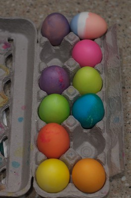

Easter Eggs

I think it's an obligation to put an egg in every dye available, and make sure it turns into some sort of putrid color. I was pleased to see that today's version leaned more in the direction of purplish-slate, as opposed to poo-brown, like it usually does. The girls had a good time. Becky ate ”jaibeens“ while the rest of us went nuts with the dye. She likes jellybeans. A lot.
I wish we had twice as many eggs to dye, since I have trouble sharing with others. I'm looking forward to deviled eggs, or egg salad, or both. Happy Easter.
Update: My apologies for not posting a photo of the eggs. I didn't realize that it would be desired. Here you can see them. Unfortunately, the purplish-slate egg has gone the way of all the earth. Although I originally did the egg in the upper-right as a slightly patriotic egg, I was reminded of the review and mockery of Pepsi's new logo, and remembered how much I enjoyed this interpretation of their new logo. Off topic, but important. ;)
- Prior: Rediscovering Lego's
- Next: Polar Bear Victimized in Headline